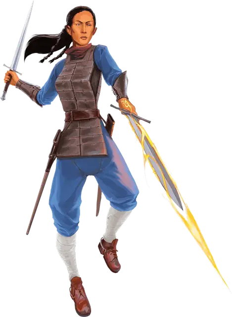

Таркананский убийца
Tarkanan Assassin
Средний Гуманоид (Любая раса), любое мировоззрение

Класс Доспеха 15 (проклёпанная кожа)
Хиты 45 (7к8 + 14)
Скорость 30 футов
| мод | спас | ||
|---|---|---|---|
| СИЛ | 12 | +1 | +1 |
| ЛОВ | 16 | +3 | +3 |
| ТЕЛ | 14 | +2 | +2 |
| мод | спас | ||
|---|---|---|---|
| ИНТ | 10 | +0 | +0 |
| МДР | 14 | +2 | +2 |
| ХАР | 11 | +0 | +0 |
Навыки Атлетика +3, Восприятие +4, Ловкость рук +5, Обман +2, Скрытность +5
Чувства тёмное зрение 60 футов, пассивное Восприятие 14
Языки Общий, Воровской жаргон
Опасность 2 (450 опыта)
Бонус мастерства +2
Особенности
Врождённое колдовство. Базовой характеристикой убийцы является Телосложение (+4 к атакам заклинаниями).Он может накладывать следующие заклинания, не нуждаясь в материальных компонентах:
• Неограниченно:огненный снаряд
• 1/день: цветной шарик
Нестабильная метка. Когда убийца накладывает врожденное заклинание, каждое существо в пределах 10 футов от него должно совершить в спасброске Телосложения Сл 12, получая 4 (1к8) урона силовым в случае провала или половину урона в случае успеха.
Таркананский убийца: Альтернативные заклинания. Сила, даруемая искажённой меткой дракона, непредсказуема. При отыгрыше убийцы Дома Тарканан вы можете совершить бросок кости по таблице Врожденные заклинания искажённой метки Дракона, чтобы определить заклинания, полученные от этой метки. Замените этими заклинаниями те, что описаны в особенности «Врождённое колдовство».
Врождённые заклинания искажённой метки дракона.
| к6 | Неограниченно | 1/день |
| 1 | Огненный снаряд (2к 10) | Огненные ладони (Зкб) |
| 2 | Электрошок (2к8) | Цветной шарик (4к8) |
| 3 | Ядовитые брызги (2к12) | Луч болезни (Зк8) |
| 4 | Дружба | Очарование личности (2 существа) |
| 5 | Малая иллюзия | Волна грома (2к8) |
| 6 | Пляшущие огоньки | Усыпление (7к8) |
Действия
Мультиатака. Убийца совершает две атаки коротким мечом.
Короткий меч. Рукопашная атака оружием: +5 к попаданию, досягаемость 5 футов., одна цель. Попадание: 6 (1к6 + 3) колющего урона, плюс 7 (2к6) урона ядом.
Огненный снаряд (Заговор). . Дальнобойная атака заклинанием: +4 к попаданию, дистанция 120 футов, одна цель. Попадание: 11 (2к10) урона огнём. Горючие предметы, по которым попало это заклинание, воспламеняются, если их никто не несет и не носит.
Цветной шарик (1/день). Дальнобойная атака заклинанием: +4 к попаданию, дистанция 90 футов, одно существо. Попадание: 18 (4к8) тип урона выбирает убийца: кислота, огонь, электричество, яд, звук.
Описание
Таркананские убийцы- это элитные убийцы, шпионы и воры,
которые работают на Дом Тарканан, преступную организацию,
специализирующуюся на кражах и убийствах. В дополнение к их смертоносному мастерству, таркананский убийца обладает искажённой драконьей меткой-искаженным знаком, который дарует им магическую силу. Дом Тарканан активно ищет и вербует людей с искажёнными драконьими метками.